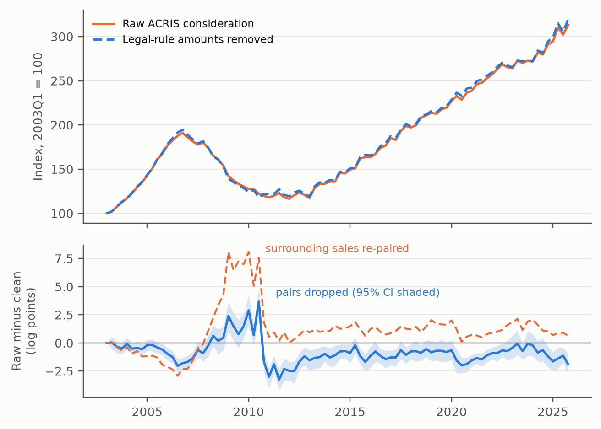

The question
When a lender takes title through foreclosure or a deed in lieu, New York transfer-tax rules can base the recorded consideration on a bid, judgment or discharged debt rather than a negotiated price. Should that amount enter a house-price index as if it were a sale price?
The paper classifies such deeds by their parties in the 2003–2025 ACRIS extract for Manhattan, the Bronx, Brooklyn and Queens, and measures what they do to a standard repeat-sales index.
Main findings
- 16,655deeds flagged as legal-rule transfers among 1.47 million records, 2003–2025.
- 62%of flagged transfers pass conventional sales screens.
- +1.1log points: how far the unscreened index sits above the screened one on average in 2008–10 (95% interval 0.6 to 1.6).
- −2.3log points: how far it sits below in 2011–12 (95% interval −2.8 to −1.7). The largest single-quarter gap is 3.7 log points, in 2010Q3.
- 2.6log points in 2010Q3 when screening only the narrowest set of lender transfers (simultaneous 95% band across quarters: 0.9 to 4.4).
These comparisons hold the classifier’s labels fixed. The document-based uncertainty and alternative index specifications below can weaken or reverse the comparison.


Why it matters
About 94–95% of flagged transfers recorded in 2016–2025 appear in the city’s public sales file at their recorded amount.
- Repeat-sales indices, hedonic models and local price series built from public deed records inherit these amounts unless deeds are classified by their parties: the document type does not distinguish them.
- In the main fixed-label comparison, the raw index falls less into 2009–10 and more into 2011–12, which matters for short-window returns and borough comparisons. The hedonic comparison also changes around 2009–10. Its later path differs from the repeat-sales result, consistent with pairing contributing to the shortfall, without identifying that mechanism conclusively.
- Dropping flagged pairs and bridging across them answer different questions; the choice moves the crisis decline by about five log points and should be made explicitly.
- The classifier is released as a free, dependency-light Python module.
What the results can tell us
The fixed-label peak-to-trough contrast is −0.64 log points, with an interval from −3.03 to +1.25. It does not establish a different overall decline. The index comparison also depends on sale dating, the estimation horizon and how repeat-sale pairs are rebuilt.
The validation uses 40 human-reference readings. Weighted precision is 0.82 and foreclosure recall is 0.71, with wide finite-population intervals: 0.40–0.99 and 0.02–0.95, respectively. Historical agreement with AI readings does not establish accuracy, and these 40 readings do not validate the original 316 resolved AI classifications.
One model combining classification-rate uncertainty with parcel resampling gives a 2010Q3 difference of 2.25 log points, with a central 95% range of −0.21 to +4.53. That range depends on the model and the reference readings; it is not a design-based confidence interval. Some alternative specifications reverse the comparison. The screened index is therefore a sensitivity result, not a verified market-price correction.
Cite this paper
BibTeX citation
@misc{loschi2026deed,
author = {Loschi, Pablo},
title = {When a Deed Is Not a Market Sale: Foreclosure Transfers,
Statutory Consideration, and Repeat-Sales House-Price
Measurement},
year = {2026},
howpublished = {Working paper and evidence update, Zenodo},
version = {1.0.12},
doi = {10.5281/zenodo.23638576}
}